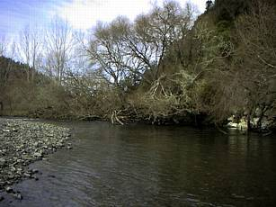
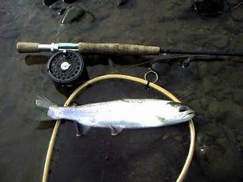
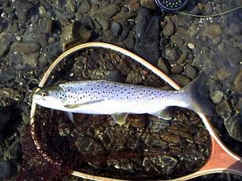
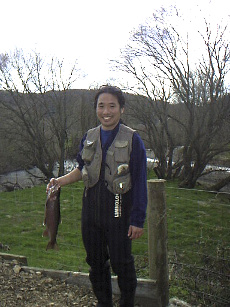

釣行日誌 ＮＺ編
指もかじかむ冬の朝
2002/08/03(SAT)
早朝６時に起きて、釣友のＲ君と合流し、真冬の山岳渓流へ。朝靄の中に太陽が浮かび、幻想的な風景の中釣り始める。10時頃までは手がかじかんでとても冷たい。魚も寝ているのか、当たりも無い。
左曲がりの内側が深い淵になっているポイントで、ミスキャストしたと思ってぼさっと見ていたマーカーがツツーと沈む。
「？」
一瞬躊躇したあとで合わせると、青黒い水底で銀褐色の腹がぐねりとうねるのが見えた。
『うわぁ、デケぇ！』
と思ったがあとの祭り。一瞬の手応えがあったので、フックがアゴをかすめてすっぽ抜けたらしい。その狡猾なブラウンは二度と反応しなかった。泣く泣くその淵を後にする。
教訓：自分ではミスキャストと思っても、流しきるまで油断しないこと。
特別デカイ砂地の淵も、この冬の洪水でだいぶ様子が変わってしまった。釣りにくいのでそこは無視して上流へ。

道路からすぐ近くにある石積み護岸の淵、その頭の急流を流していると、オレンジ色の粘着式マーカーがピュンと沈む。合わせに続いて水面に跳躍したのはかわいい30cmクラスのレインボー。何回も何回もよく跳んだ。
その上のポイント、５メートルほどの沈木に挟まれた流れ込みにビーズヘッドのヘアーアンドコパーを打ち込むと、水中できらっと光る影。しかし、リーダーが弛みすぎていて合わせきれない。再度の投射。沈木に掛かるぎりぎりまで流して聞き合わせをすると、ぐいぐいと手応えがあり、レインボーが横走りをする。取り込んでみると、やはり35cmほどのレインボーであった。冬ではあるがコンディションがいいし、元気である。何を食べているのか？
さらに遡行し、長～い直線の、瀬でもあり淵でもあるというポイントに来た。見逃すには惜しいので、対岸に渡り、めぼしいスポットから釣り上がる。
マーカーが引き込まれ、ズンという手応え。ギュンギュンッという脈動。すっぽ抜け。
『あああああぁぅ.....今のはデカかった！』
気を取り直して次のスポットへ。ニンフが流れ込みに落ちる。オレンジ色の発泡スチロールがピクン。合わせに続く横走り。ラインが出過ぎており、あわてて手繰るが一瞬弛んだスキに重量が消える。
『あああああぁぅ.....余分なラインを出しておくべきではなかった！』
数々の失策にもめげず、最も上流のスポットへ。対岸の柳の根っこの辺りにマーカーが消し込む。合わせ。グングィンの手応え。下流への突進。サイズに似合わぬ激しいファイトの末、やっぱり35cmほどのレインボーが上がってくる。新しいランディングネットで思い切ってすくい上げる。

この辺りの鱒が全て集まっているかのような好ポイントであった。覚えておこう。
禁漁区間の始まりである橋の下まできた。去年は無かった魅力的な荒瀬のポケットができている。下流から慎重にニンフを流すと、褐色の魚影が水中で反転し、インジケーターを引き込んだ。捻転が始まり、すぐにブラウンとわかる。ぐいぐいと６番ロッドを引き絞り、ちいさいけれども迫力のあるファイトで40cmのブラウンが浅瀬に横たわる。12番のビーズヘッド赤茶ニンフをしっかり上顎にくわえ込んでいる。斑点が美しい。

橋まで上がり、やってきたＲ君と合流。彼は支流で型の良いレインボーを上げていた。スピニングロッドでだけど。（笑）

空気が張りつめた冬晴れの朝、繊細なニンフを楽しんだ山岳渓流の８月。
釣行日誌ＮＺ編 目次へ
サイトマップ
ホームへ
お問い合わせ